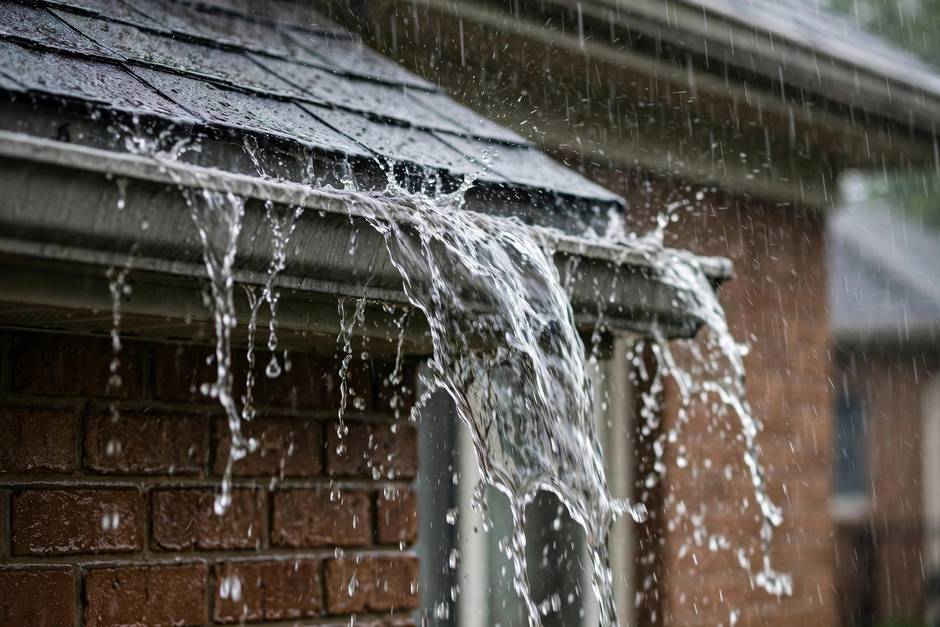

Why is my gutter overflowing and causing roof damage
Overflowing gutters soak fascia, feed ice dams, and stain siding. This guide explains the five causes, how the damage spreads, and what clearing and repair each involve.

An overflowing gutter is not a cosmetic problem: water that misses the gutter soaks fascia, backs up under the roof edge, feeds ice dams in winter, and stains siding and foundations. This guide explains the five causes of overflow, how the damage spreads, the Des Plaines winter angle, and the difference between clearing — homeowner guidance — and repair, which is professional scope.
Gutter cleaning is not a service page on this site. Clearing is described here as homeowner guidance; gutter installation and repair topics are on the gutter page linked below.
The short answer
Gutters overflow because water cannot get through them or cannot get away from them: clogs block the channel, sagging or back-pitch sends water the wrong way, undersized gutters cannot carry the flow, too few downspouts bottleneck the system, and ice closes the channel in winter. Each cause has a different fix, and the first step is identifying which one — or which combination — is present.
Why gutters overflow: the five causes
1. Clogs
Leaves, twigs, and debris block the channel and the downspout openings. Fall gutter clearing before freeze is the highest-value pre-winter task in Chicago seasonal guides, given here as homeowner guidance. Clogs are the most common cause and the most straightforward to identify: water spills over the front edge at a specific point, and the blockage is usually visible at the downspout opening.
2. Sagging and back-pitch
Gutters that sag or pitch away from the downspout hold standing water, which overflows in heavy rain and freezes in winter. Sagging is a hanger and alignment question — professional scope — and standing water in a gutter is a sign worth recording with photographs.
3. Undersized gutters
A gutter sized for a smaller roof area, or for a roof with a steep pitch that sheds water fast, cannot carry peak flow. Undersizing shows as overflow along the whole run during heavy rain, not at one point. Sizing is a design question for the gutter installer.
4. Too few downspouts
Downspouts are the bottleneck: too few, or too small, and the gutter backs up even when clean. The symptom is overflow near the middle of long runs, away from the downspouts. Adding downspouts is professional scope.
5. Ice and snow
In winter, ice closes the channel and the downspouts, and meltwater has nowhere to go. Ice in gutters is part of the ice-dam mechanism — attic heat melts snow, meltwater refreezes at the cold eave — and clearing ice from gutters is not a homeowner task. Do not chip at ice with tools; sources warn that chipping damages roofs and gutters.
How overflowing gutters damage a roof
The damage spreads in a predictable sequence:
- Fascia. Water spilling over the back edge soaks the fascia board, which rots. Rotted fascia cannot hold gutters or drip edge.
- Roof edge. Water backing up under the first courses of shingles soaks the deck edge and the underlayment. Ice barrier at the eave (self-adhesive shield, at least 24 inches at gutter edges per the Des Plaines guide) is the defence — but it is not a substitute for working drainage.
- Siding and foundation. Water spilling over the front edge stains siding, soaks the wall below, and pools at the foundation. The gutter’s job is to carry water away from the building; overflow reverses it.
- Ice dams. Blocked or iced gutters feed the dam at the eave, and the dam backs water under the shingles. The gutter and the ice dam are one system in winter.
For the gutter system as a whole, see the gutter installation page.
The Des Plaines winter angle
At Chicago O’Hare, the nearest official station, the 1991–2020 normals show 38.4 inches of snowfall a year and about 121 freezing nights — a heavy freeze–thaw pattern. The ice-dam core season runs December through March (a reasoned characterisation, not a National Weather Service-defined season), and fall gutter clearing before freeze is the highest-value pre-winter task in the guides.
The winter sequence is worth understanding: attic heat warms the deck, snow melts, meltwater refreezes at the cold eave, the dam forms, and later meltwater backs up under shingles. Gutters are part of that sequence, not separate from it — which is why clearing before freeze matters more than any winter intervention.
Clearing, repair, and replacement: what each involves
Three levels of response, in order:
- Clearing (homeowner guidance). Remove leaves and debris from the channel and downspout openings, and check downspout flow with a hose at ground level. Work from a stable ladder position, never from the roof, and stop if conditions feel unsafe.
- Repair (professional scope). Re-pitching, re-hanging, sealing joints, and replacing damaged sections. Repair addresses sagging, back-pitch, and joint failures.
- Replacement (professional scope). When gutters are undersized, extensively damaged, or at the end of their life, replacement with correct sizing and downspout placement is the answer. Sizing and placement are design questions for the installer.
Gutter guards are discussed in guides as reducing debris entry, not eliminating maintenance. No guard claim is made here; ask what a business recommends and what maintenance remains.
Common mistakes with overflowing gutters
- Clearing only the visible debris. Downspout openings and elbows clog first. Check flow, not just appearance.
- Ignoring sagging. A clean gutter that sags still overflows. Standing water in a clean gutter means a pitch or hanger problem.
- Chipping ice. Hammers and metal tools damage gutters and roofs. Ice removal is specialist scope and is not claimed as a service on this site.
- Assuming guards end maintenance. Guards reduce debris; they do not eliminate clearing. Maintenance remains.
- Waiting until spring. Fall clearing before freeze is the highest-value pre-winter task. Spring clearing follows winter, it does not replace fall clearing.
When to call a professional
Call when gutters sag, leak at joints, overflow when clean, or show ice-dam damage; when fascia is soft or stained; or when sizing and downspout questions need a design answer. For the gutter topic, see the gutter installation page, and for roof-edge damage, the roof repair page.
Frequently Asked Questions
Why is my gutter overflowing in Des Plaines?
Clogs, sagging or back-pitch, undersized gutters, too few downspouts, or ice closing the channel — usually in combination. Clean gutters that still overflow point to pitch, sizing, or downspout questions, which are professional scope.
Can overflowing gutters damage my roof in Des Plaines IL?
Yes. Water backing up under the roof edge soaks the deck and underlayment, fascia rots, and blocked gutters feed ice dams in winter. The gutter and the roof edge are one system.
How do I stop my gutter overflowing in Des Plaines?
Clear leaves and debris and check downspout flow as homeowner guidance. If overflow continues when clean, the cause is pitch, sizing, or downspouts — call a professional. Do not chip at ice.
Who fixes overflowing gutters in Des Plaines Illinois?
Roofing and gutter contractors handle repair and replacement; clearing is homeowner guidance. WP Exterior Inc can be reached at (224) 802-4866 during listed hours; call to confirm gutter scope and terms.
How much does gutter repair cost in Des Plaines?
No Des Plaines-specific gutter repair price is published. Guide totals for gutter work (Angi $851–$2,424, average $1,600; Modernize typical $1,200–$3,500) describe broader gutter projects, not a specific repair. Pricing comes from a written on-site estimate.
Get Help With Roofing in Des Plaines
If gutters are overflowing, sagging, or feeding ice dams, call WP Exterior Inc at (224) 802-4866 during listed hours to discuss scope and terms.